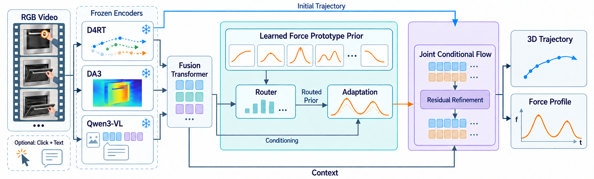
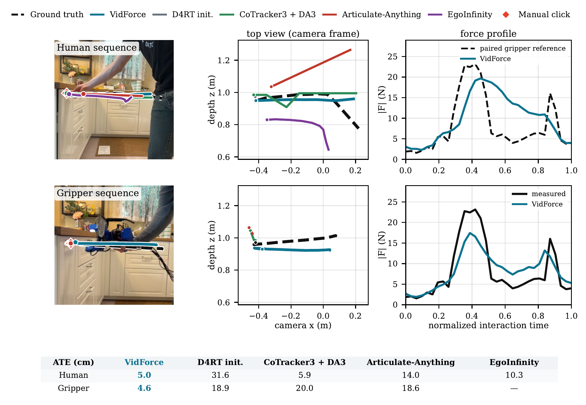
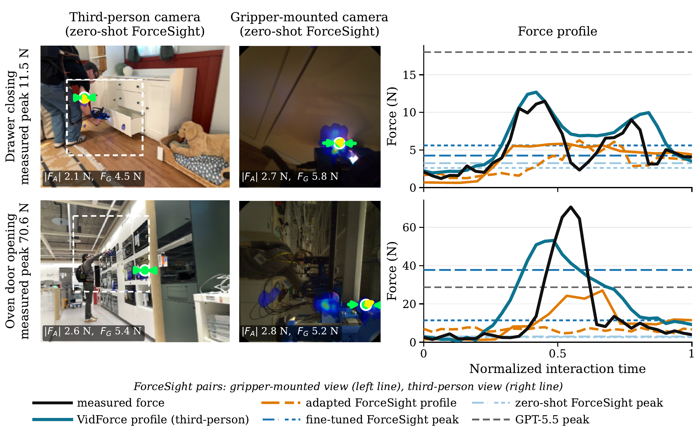
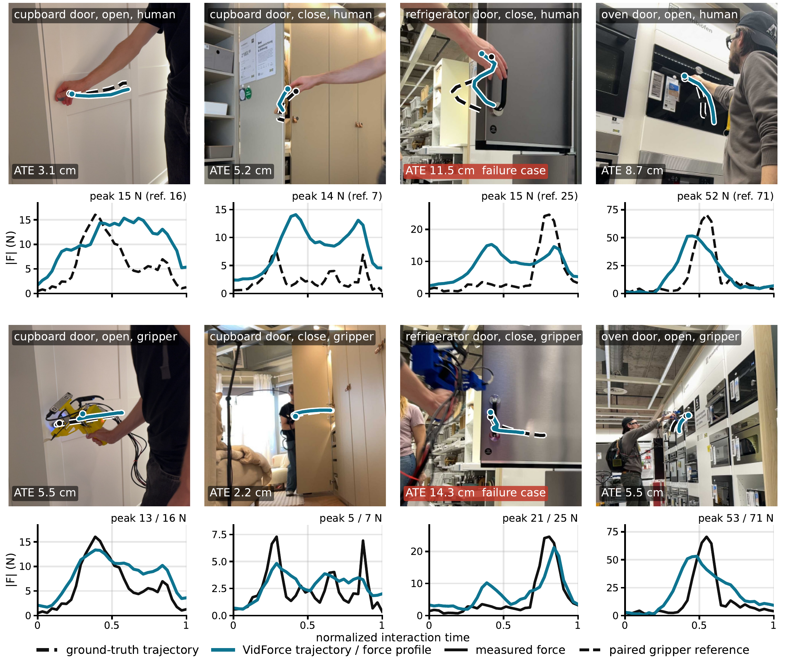
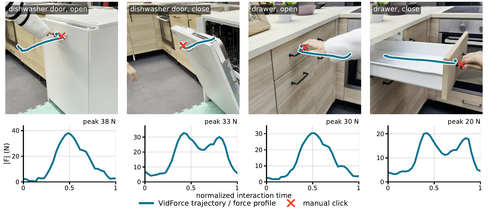
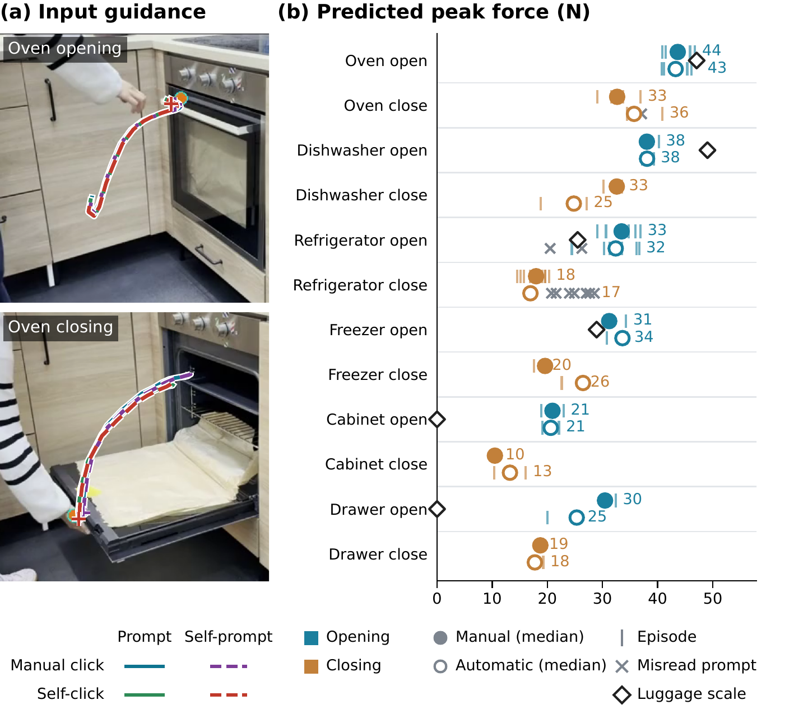

VidForce: Predicting Force-Aware Articulation by Observing Humans
Anonymous submission to ICLR 2027

Abstract
People can anticipate how an object moves and the effort an interaction may require by watching others. How can embodied agents acquire this understanding from video? Force measurements provide direct sensory supervision, but require specialized equipment and remain limited in quantity. We introduce VidForce, which estimates an interaction trajectory together with a force profile from a third-person RGB video; 2D contact clicks and textual object–action prompts are optional. Our approach makes limited instrumented measurements useful for interpreting human interactions through learned physical prototypes as a prior. The prototypes share learned force levels and temporal profiles across interactions of comparable effort, with visual and semantic cues determining their contribution to each observation. Geometric and vision–language features adapt this prior to the observed interaction, while a joint conditional flow refines an initial tracked trajectory together with the force profile. Paired human and instrumented-gripper recordings provide measured force references for supervising human video, and a separately trained torque model demonstrates that the formulation extends to other sensory quantities. We evaluate trajectory recovery and force estimation through baseline comparisons and controlled ablations on held-out interactions from the Hoi! dataset. On this evaluation subset, VidForce achieves 6.6 cm ATE, peak-force MAE and RMSE of 4.81 N and 5.92 N, respectively, and force-profile RMSE of 4.95 N. On real-world videos, VidForce infers motion and force reliably and consistently despite the variability in human execution. We further deploy VidForce on a Spot robot, where trajectories and force profiles estimated from human demonstrations drive real-world articulated-object manipulation, and report success rates across repeated trials.
Method


Comparison with Baselines
6.6 cm trajectory ATE · 4.81 N peak-force MAE · 4.95 N profile RMSE on held-out Hoi! interactions.
| Method | Approach | Input (view) | Traj. | Peak | Profile |
|---|---|---|---|---|---|
| D4RT initialization | contact-seeded tracks | clip, contact (T) | ✓ | – | – |
| CoTracker3 + DA3 | tracked contact pixel | clip, contact (T) | ✓ | – | – |
| Articulate-Anything | Gemini-built asset | 5 frames, contact (T) | ✓ | – | – |
| EgoInfinity | hand reconstruction | clip, contact (T, human) | ✓ | – | – |
| GPT-5.5 | prompted peak estimate | 8 frames, text (T) | – | ✓ | – |
| ForceSight, zero-shot | force goal | RGB-D frame, text (G, T) | – | ✓ | – |
| ForceSight, adapted | per-frame force | RGB-D frame, text (G, T) | – | ✓ | ✓ |
| VidForce | prior + joint flow | clip, contact, text (T) | ✓ | ✓ | ✓ |
T third-person, G gripper-mounted camera. Contact point and prompt are optional for VidForce.
Trajectory recovery
| Method | All (99) | Human (51) |
|---|---|---|
| D4RT initialization | 11.8 | 11.1 |
| CoTracker3 + depth | 13.3 | 14.2 |
| Articulate-Anything (adapted) | 17.5 | 17.3 |
| EgoInfinity (adapted) | — | 15.1 |
| VidForce | 6.6 ± 0.4 | 7.9 ± 0.8 |


Force estimation
| Method | MAE | RMSE |
|---|---|---|
| GPT-5.5, video | 6.85 | 11.88 |
| ForceSight (adapted, third-person) | 10.30 ± 0.75 | 16.60 ± 0.92 |
| GPT-5.5, video + text | 6.98 | 11.43 |
| VidForce | 4.81 ± 0.38 | 5.92 ± 0.42 |


± is the standard deviation over three training seeds; ATE aligns the initial point only. Selected rows from the paper.
Qualitative Results
Held-out Hoi! interactions, each performed by a person and by the instrumented gripper.


Real-World Videos
Seven phone videos, six kitchen objects, 46 interactions.


More


Robot Deployment
Oven: 7/10 with force, 0/10 without. Drawer: 9/10 in both conditions.
| Object | Viewpoint | Load | Without force | With force |
|---|---|---|---|---|
| Oven door | 1 | – | 0/5 4F, 1T | 3/5 1P, 1T |
| 2 | – | 0/5 4F, 1T | 4/5 1T | |
| Drawer | 1 | empty | 5/5 | 5/5 |
| 2 | ~5 kg | 4/5 1T | 4/5 1T |
Five trials per viewpoint and condition. Failures: F force, T trajectory, P partial opening.